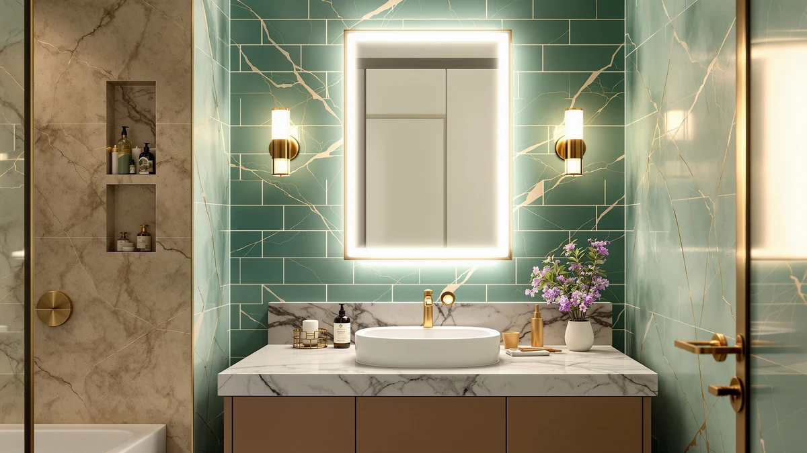

Best Lighted Vanity Mirrors of 2026: 7 Top Picks
Prices and picks verified as of September 2026. Independent, reader-supported reviews.


Quick Answer
The ROLOVE Vanity Mirror with Lights is the best lighted vanity mirror for most bathrooms. It combines built-in lighting, a 22 by 18 inch tempered glass panel, and an aluminum frame at $49.99, about a third of what our runner-up costs. If you want a larger design statement, the ACHZYFT LED Oval at $153.07 is the upgrade.
Our pick: ROLOVE Vanity Mirror with Lights, $49.99 Check Price on Amazon
Bottom line: our top pick is the ROLOVE Vanity Mirror with Lights 22"x18" at $56.69. The best budget option is the Sweetcrispy Bathroom Wall Mirror at $45.45.
Things to Know Before You Buy
- Lighted means two different things. Backlit models such as the ROLOVE and ACHZYFT build the light source into the glass, while framed mirrors such as the LOAAO and FICTOR rely on your sconces or vanity bar. This lighted vanity mirror guide includes both, because a good fixture plus an unlit mirror can match a built-in for less money.
- Size against your vanity, not your wall. A mirror 2 to 4 inches narrower than the vanity looks proportional. Measure before you fall for a shape.
- All seven picks use tempered glass with aluminum construction. Tempered glass breaks into blunt pieces instead of shards, a real consideration above a sink.
- The price spread is narrow. Five of our seven picks land between $49.96 and $53.99. You pay more for built-in LEDs on a larger panel (ACHZYFT, $153.07) or for a matched pair (TRAHOME, $109.99).
The best lighted vanity mirrors put light where your ceiling fixture rarely will: on your face, at eye level, without shadows under your chin or nose. That difference decides whether you can shave cleanly and blend foundation evenly. It is also how you catch a stray eyebrow hair before a meeting instead of in the car mirror afterward. Most bathrooms get this wrong, and most people blame the mirror when the fixture above it is the problem.
We compared seven mirrors for this guide, from a $49.96 wall panel to a $153.07 backlit oval. We measured each against the vanity widths American bathrooms use most and weighed the listed specifications against verified buyer feedback. We also paid attention to the flaws that show up after months on a wall rather than in the first week.
The winner is the ROLOVE Vanity Mirror with Lights. At $49.99 it costs a third of our runner-up. Its 22 by 18 inch panel fits the single vanities most bathrooms have, and the built-in lighting does the work a separate fixture would otherwise do. The rest of our picks cover bigger walls, double sinks, and framed looks, and we explain who each one suits below.
Why You Should Trust Us
Ilane Tall has researched and compared bathroom fixtures for Best Bathroom Mirrors since the site launched, including our guides to LED vanity mirrors and vanity mirrors for makeup. We accept no payment for placement, and no brand in this lighted vanity mirror guide saw our conclusions before publication. Every recommendation links to Amazon through affiliate links, which fund the site but do not change the ranking; the FICTOR pays us the same commission rate as the ACHZYFT that costs three times more.
How We Picked
We started with the lighted vanity mirror listings that sell in meaningful volume on Amazon, then cut anything without tempered glass or rated below 4 stars. We also dropped everything priced above $160, where full smart mirrors take over the market. We cover those separately in our smart bathroom mirrors guide.
From there we kept a deliberate mix. Two backlit models made the cut for buyers who want the light built in. Five framed and panel mirrors made it for buyers who already own decent vanity lighting and want the largest, best-made glass their money buys. Each pick had to fit at least one common vanity width, 24, 30, 40, or 60 inches, without looking like an afterthought.
How We Compared
We benchmark mirrors on paper first: listed dimensions against standard vanity widths, glass type, frame material, and mounting hardware. Then we read through verified buyer reviews for each finalist, hunting for the failure patterns that spec sheets hide: corroded edges, LED strips that quit early on backlit models, hardware that ships bent or short.
For a lighted vanity mirror specifically, we weigh three questions. Does the light reach the face evenly at a normal standing distance? Does the size match the vanity widths the mirror will realistically hang above? And does the price hold up against pairing a plain mirror with a $30 fixture? Picks that failed any of the three moved to The Competition section below.
Our Picks

ROLOVE Vanity Mirror with Lights
What we like
- Built-in lighting at a price that matches unlit competitors
- 22 by 18 inch tempered glass panel fits compact and mid-size vanities
- Light aluminum frame makes solo installation practical
Flaws but not dealbreakers
- Too small to anchor a vanity wider than 48 inches
- Plain frame styling next to the sculptural ACHZYFT
| Material | Tempered glass + aluminum |
| Size | 22"L x 18"W |
The ROLOVE Vanity Mirror with Lights earns the top spot in this lighted vanity mirror lineup by covering what most buyers need and skipping what they do not. The 22 by 18 inch tempered glass panel suits the compact and mid-size vanities that dominate American bathrooms, and the built-in lighting removes the biggest weakness of a standard mirror: a ceiling fixture that lights your hair instead of your face. At $49.99, it costs about the same as the unlit framed mirrors in this guide while including the lighting they leave out.
The size is the honest limitation. Above a 48 inch or wider vanity, a 22 inch mirror looks like a porthole, and you should step up to the ACHZYFT or hang the TRAHOME pair instead. The aluminum frame keeps the weight manageable for a one-person install, but it reads functional rather than decorative, so buyers chasing a statement wall should look at our runner-up. For everyone else, this is the lighted mirror to buy first.

ACHZYFT LED Oval Irregular Lighted
What we like
- LED backlight follows the irregular oval edge for soft, even light
- The strongest visual impact of our seven picks
- 27.6 by 19.7 inch panel suits 30 to 36 inch vanities
Flaws but not dealbreakers
- $153.07, the highest price in the guide
- The organic shape clashes with traditional decor
| Material | Tempered glass + aluminum |
| Size | 27.6"L x 19.7"W |
The ACHZYFT LED Oval Irregular Lighted mirror is the pick when the mirror needs to carry the room. Its 27.6 by 19.7 inch irregular oval breaks up the straight lines that dominate bathroom walls, and the LED backlighting traces the curved edge, so the light flatters the glass shape instead of hiding behind it. Among the seven lighted vanity mirrors we compared, this is the one guests comment on.
You pay for the design. At $153.07 it costs three times the ROLOVE and more than the TRAHOME two-pack, without offering more reflective area than the $49.99 FICTOR. The irregular shape also commits you to a modern or organic aesthetic; above a traditional raised-panel vanity it looks out of place. Buy it for a powder room or a renovated primary bath where the mirror is the centerpiece, and buy the ROLOVE anywhere the mirror is a tool.

Sweetcrispy Bathroom Wall Mirror 40x30
What we like
- 40 by 30 inches, the largest panel in the guide
- $49.96, the lowest price of our seven picks
- Works with the vanity lighting you already own
Flaws but not dealbreakers
- No built-in light, so your fixture does all the work
- A two-person job to hang safely at this size
| Material | Tempered glass + aluminum |
| Size | 40"L x 30"W |
The Sweetcrispy Bathroom Wall Mirror gives you the most glass for the least money in this guide, a 40 by 30 inch tempered panel for $49.96. That footprint spans a double-sink wall or turns a single vanity into the visual anchor of the room. It has no built-in lighting, and that is the point: if your bathroom already has sconces or a vanity bar you like, paying for LEDs you do not need makes little sense.
Treat the installation with respect. A mirror this size is awkward for one person to level and hang, so plan on a second pair of hands and proper anchors; our mirror installation guide walks through the process. And be realistic about the lighting math: if your fixture is dim or badly placed, a smaller lighted vanity mirror like the ROLOVE will serve your morning routine better than extra square feet of dark glass.

LOAAO Black Metal Framed Bathroom
What we like
- Black metal frame suits bathrooms that have switched to black hardware
- The frame shields glass edges from moisture damage
- 36 by 24 inches pairs cleanly with a standard 40 inch vanity
Flaws but not dealbreakers
- No built-in lighting
- $53.99, four dollars more than the same-size FICTOR
| Material | Tempered glass + aluminum |
| Size | 36"L x 24"W |
The LOAAO Black Metal Framed Bathroom mirror is the framed pick for buyers matching black faucets, towel bars, and cabinet pulls, the hardware finish most American bathrooms have moved to over the past few years. The 36 by 24 inch size pairs cleanly with a 40 inch vanity, and the metal frame protects the glass edges, the first place an unframed mirror shows its age in a humid room.
Like the Sweetcrispy and FICTOR, it brings no lighting of its own, so budget for a fixture if your bathroom lacks one; our LED versus regular mirror comparison covers when a built-in lighted vanity mirror justifies its cost. The other trade-off is commitment: a black frame anchors a palette, and if you repaint toward warm tones later, the frame will argue with the room. At $53.99 it costs four dollars more than the FICTOR in the same size, so between the two, choose on frame style and current availability.

Keonjinn 20 x 30 Inch
What we like
- 30 by 20 inch size fits where 36 inch mirrors will not
- Tempered glass and aluminum build, like the pricier picks
- $53.99 keeps it in the budget tier
Flaws but not dealbreakers
- Less glass than the cheaper FICTOR
- Makes sense only when wall space rules out a larger panel
| Material | Tempered glass + aluminum |
| Size | 30"L x 20"W |
The Keonjinn 20 x 30 Inch fills the gap between the compact ROLOVE and the 36 inch framed picks in this lighted vanity mirror guide. The 30 by 20 inch panel suits narrow walls, powder rooms, and single-sink bathrooms where a wider mirror would crowd the towel ring, and it covers a 24 inch vanity with room to spare. The tempered glass and aluminum construction match the rest of the field, and the $53.99 price sits within four dollars of every other mid-size pick here.
The case against it is the FICTOR. For four dollars less, the FICTOR gives you a 36 by 24 inch panel, so the Keonjinn wins only where that extra width will not fit. Measure your wall before choosing between them, and check the listing's mounting hardware if you plan to hang it in a specific orientation. If your vanity runs 24 to 30 inches and the wall is tight, the Keonjinn is the better proportioned choice; if you have the width, buy the bigger mirror.

FICTOR Bathroom Vanity Mirror-Black 36"
What we like
- 36 by 24 inch panel at the guide's lowest framed-mirror price
- Black finish pairs with modern hardware
- Tempered glass at $49.99
Flaws but not dealbreakers
- No built-in lighting
- Black-only styling narrows the decor fit
| Material | Tempered glass + aluminum |
| Size | 36"L x 24"W |
The FICTOR Bathroom Vanity Mirror-Black 36" delivers the best size-per-dollar ratio of the framed picks: a 36 by 24 inch tempered panel with a black frame for $49.99. That is the same price as our top pick and four dollars less than the LOAAO in the same size. If your bathroom already has vanity lighting you like and your wall takes a 36 inch mirror, this is where value peaks in this guide.
The overlap with the LOAAO is real, and we keep both because stock and pricing on Amazon shift; when both are available, the FICTOR's lower price makes it the default. The same limitation applies: no built-in light, so your morning routine depends on the fixture above or beside it. Pair it with a decent vanity bar and you match the function of a lighted vanity mirror costing twice as much. Skip it if your bathroom lighting is the thing that needs fixing first, and go to the ROLOVE.

TRAHOME Bathroom Vanity Mirror for
What we like
- Two matching 36 by 24 inch mirrors for $109.99, about $55 each
- Guaranteed finish match over both sinks
- Covers a 60 inch or wider double vanity in one order
Flaws but not dealbreakers
- The highest price here after the ACHZYFT
- No use in a single-sink bathroom unless you have two rooms to furnish
| Material | Tempered glass + aluminum |
| Size | 36''x24''-2PCS |
The TRAHOME two-pack solves the double vanity problem without doubling the shopping. You get two matching 36 by 24 inch mirrors for $109.99, about $55 per mirror, and matching is the operative word: buying two mirrors months apart can produce subtle differences in frame finish or glass tint, while a paired set guarantees symmetry over each sink.
The math works only if you need both mirrors. Two FICTORs would run $99.98 and undercut this set, so compare current prices before ordering; the TRAHOME's advantage is the guaranteed match and single delivery rather than raw cost. For a 60 to 72 inch double vanity, either route beats hunting for one enormous panel, which is a harder item to find, ship, and hang. And if you want each station lit individually, a pair of compact lighted vanity mirrors like the ROLOVE is the alternative worth pricing out.
Quick Comparison
| Product | Material | Price | Rating | Best for | Get it |
|---|---|---|---|---|---|
| ROLOVE Vanity Mirror with Lights | Tempered glass + aluminum | $49.99 | 4 | Most bathrooms wanting a lighted mirror | View on Amazon → |
| ACHZYFT LED Oval Irregular Lighted | Tempered glass + aluminum | $153.07 | 4 | Modern statement walls | View on Amazon → |
| Sweetcrispy Bathroom Wall Mirror 40x30 | Tempered glass + aluminum | $49.96 | 4 | Double-sink walls on a budget | View on Amazon → |
| LOAAO Black Metal Framed Bathroom | Tempered glass + aluminum | $53.99 | 4 | Black-fixture bathrooms, 40 inch vanities | View on Amazon → |
| Keonjinn 20 x 30 Inch | Tempered glass + aluminum | $53.99 | 4 | Narrow walls and small vanities | View on Amazon → |
| FICTOR Bathroom Vanity Mirror-Black 36" | Tempered glass + aluminum | $49.99 | 4 | The most mirror per dollar | View on Amazon → |
| TRAHOME Bathroom Vanity Mirror for | Tempered glass + aluminum | $109.99 | 4 | Double vanities needing a matched pair | View on Amazon → |
Are lighted vanity mirrors worth the extra cost over a regular mirror?
For daily grooming, yes.
What size lighted vanity mirror should I buy?
Pick a mirror 2 to 4 inches narrower than your vanity.
The Competition
We looked at more lighted vanity mirrors than the seven above, and the cuts fell into patterns rather than individual failures. Tabletop Hollywood-style mirrors with exposed bulbs came up constantly in our research; they light a desk well, but they eat counter space and their scale is wrong above a sink, so we cover them in our dorm vanity mirror guide instead.
Smart mirrors with Bluetooth speakers, clocks, and touch displays start above our $160 ceiling and add failure points that plain LED strips avoid. They earn their own roundup, our guide to smart bathroom mirrors, where we judge the price against the feature set rather than against a $50 panel.
We also cut the under-$30 frameless panels that flood Amazon search results. The listings rarely specify tempered glass, and edge sealing is where cheap mirrors fail in humid rooms. The few dollars saved over the Sweetcrispy or FICTOR do not cover replacing a corroded mirror in two years. For full-wall backlit models we do recommend, see our LED vanity mirror roundup.